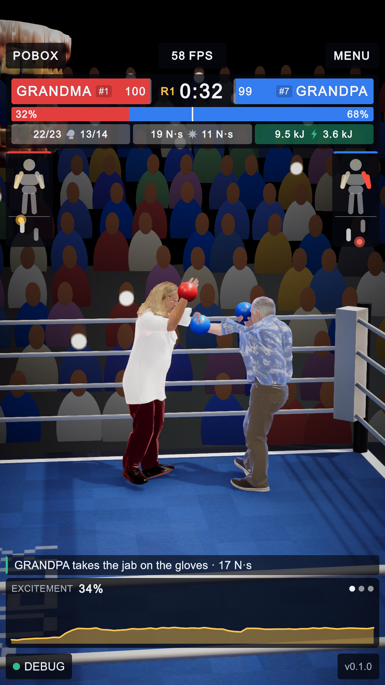
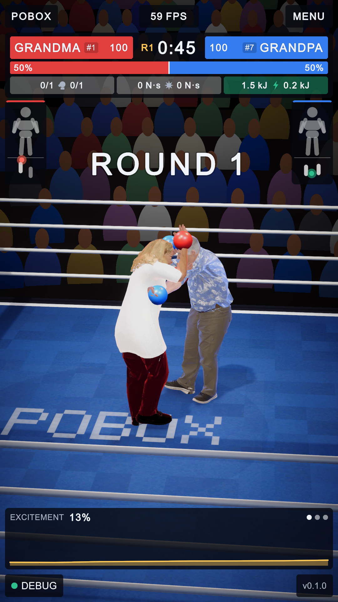
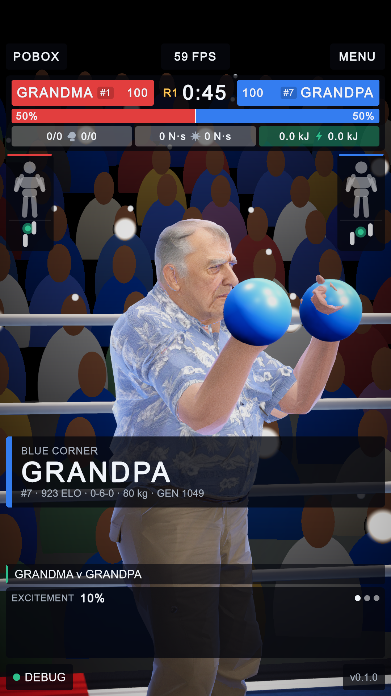
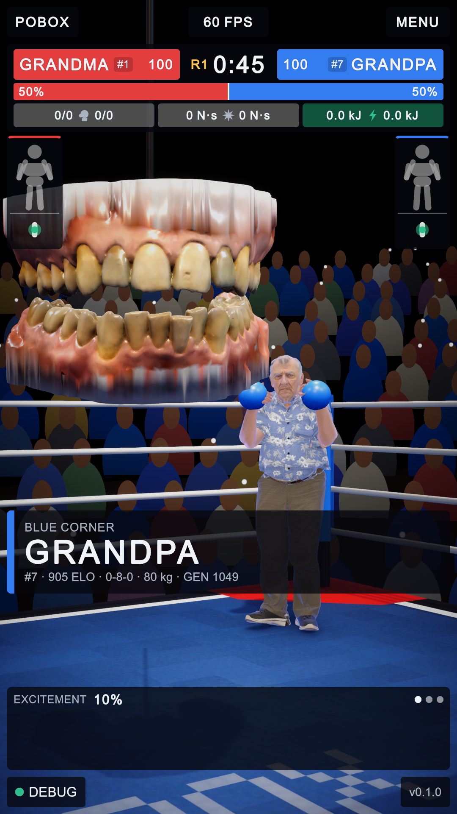
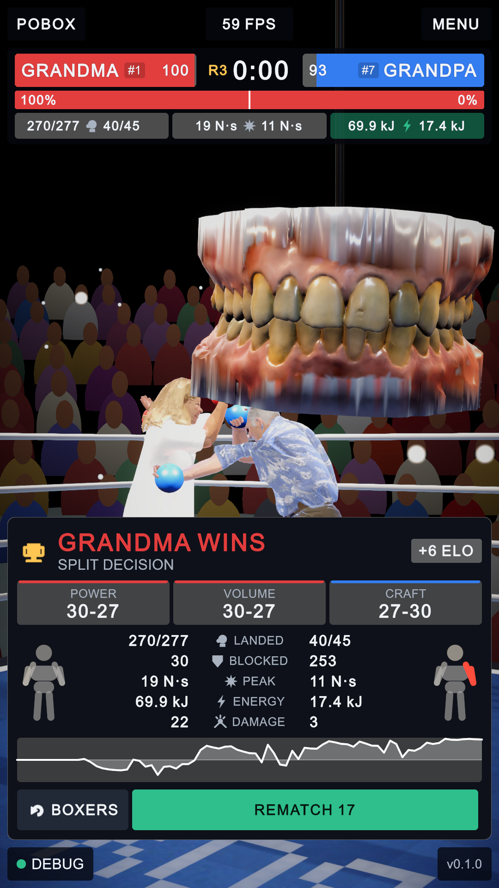

PoBox: the teeth announce, then leave
2 October 2026 · the announcer before and after, with what changed marked on the pictures
The owner asked for the teeth to be shown only during the ring announcements for the two boxers, at the centre of the ring, and answered four questions: seen for the introductions and the winner; the teeth at the centre, the boxers in their corners; the voice still heard when the teeth are not there; lowered on the cable and hauled away.
| Moment | Before | After |
|---|---|---|
| Introductions | teeth over the ring, but each shot was a close-up of a boxer and did not show them | teeth lowered to ring centre at head height (1.7 m); each shot has them in front and the boxer in his corner behind |
| Round call, "down" | teeth came down from 3.3 m to 2.45 m to say them | heard, not seen |
| The rounds | teeth hung over the ring all bout, mouthing the commentary, and got into low shots | not in the ring and not drawn |
| The winner | teeth spoke from over the ring; the winner's shot did not show them | teeth lowered to ring centre again, in the winner's shot, and stay 2.5 s after the last word |
During a round

A
1- Before: the teeth hung 3.3 m over the ring for the whole bout. From a low camera they came into the picture, here across the title in the top left corner.
- After: nothing over the ring while they box. "Round one" was still called aloud a moment before this picture.
The before pictures were taken from the game as the owner had it running, in a taller window, so the interface sits a little lower in them.
The introductions

B
2 3 4- Before: head and shoulders of the boxer being introduced. The voice came from teeth that were out of the picture, above and behind the camera.
- The teeth at the centre of the ring, 1.7 m up, saying "in the blue corner, Grandpa". They take 1.1 s to come down and are speaking as they arrive.
- The cable they come down on.
- The boxer in his corner, further away than before, to the right of the teeth. The camera stands on the far side of the ring centre from him, turned 18 degrees off the diagonal so that the other boxer, in the corner at its back, is not in front of the lens.
The winner

5 6- The teeth come down a second time to say "the winner, Grandma", and stay two and a half seconds after the last word. If a boxer is standing in the middle of the ring they stop higher, at 2.45 m, over the boxers' heads.
- The winner (left) beyond them. When the teeth have gone the shot goes back to circling the winner, as it did before.
There is no before picture of this moment: the winner's shot used to be a close circle round the winner and never showed the teeth.
Assets/Scripts/Runtime/Announcer/TeethAnnouncer.cs (Present, introHeight,
awayHeight, arriveSeconds, lingerSeconds, winnerLingerSeconds) and
Assets/Scripts/Runtime/Broadcast/BroadcastDirector.cs (PlaceIntroduction and the six intro… fields that frame it).
No scene or prefab was rebuilt: the new fields take their defaults. The teeth no longer mouth the commentary's own lines, since they are not there to do it.
Not checked: how the two introduction shots sit on a 720 × 1280 or a 1080 × 2400 screen; the pictures are 1080 × 1920.